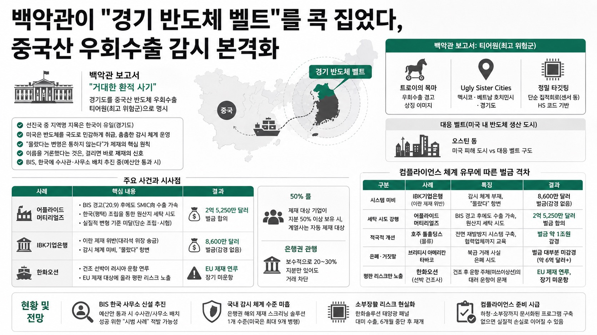

언더스탠딩이 생크션랩 조의준 대표와 짚은 미국 제재 리스크 — 백악관 보고서의 경기도 지목부터 어플라이드 머티리얼즈 2.5억 달러 벌금까지.

01핵심 개요
백악관 보고서 "거대한 환적 사기"가 한국 경기도를 중국산 반도체 우회수출 티어원(최고 위험군)으로 명시
어플라이드 머티리얼즈, 평택 조립을 통해 대중국 SMIC 수출을 세탁하려다 2억 5,250만 달러 벌금 합의
IBK기업은행, 이란 제재 위반(대리석 위장 송금) 사건으로 8,600만 달러 벌금 — 감시 체계 미비가 결정적 사유
한화오션 건조 선박이 러시아 운항 연루로 EU 제재 대상에 올라 조선사까지 평판 리스크 노출
미국 BIS(산업안보국), 대만에 이어 한국에도 수사관·사무소 배치 추진 중(예산안 통과 시)
02핵심 주장 / 논점 구조
조의준 대표는 백악관이 "사우스코리아"나 "서울"이 아니라 "경기도(Gyeonggi Semiconductor Belt)"라는 지역명을 콕 집어 보고서에 명시한 것 자체가 매우 이례적이라고 강조 — 선진국 중 지명이 특정된 사례는 한국이 유일함
보고서는 멕시코, 베트남 호치민시와 함께 경기도를 "Ugly Sister Cities"·"티어원(가장 위험한 그룹)"으로 묶고, 트로이의 목마 이미지를 표지에 사용해 우회수출 경고를 상징화
미국은 반도체를 극도로 민감하게 취급 — 바이든 행정부 시절부터 이미 장난감에 들어가는 저가 중국산 반도체까지 통제 대상으로 검토했을 정도로 촘촘한 감시 체계를 구축해 옴
미국 제재의 핵심 원칙은 "몰랐다는 변명은 통하지 않는다"는 것으로, 삼성전자·SK하이닉스 같은 대기업이라도 하청·소부장 업체의 위반이 적발되면 함께 제재 대상에 연루될 수 있음
조 대표는 "미국이 이름을 한번 거론했다는 건 단순 경고가 아니라, 걸리면 바로 제재에 들어간다는 신호로 봐야 한다"고 진단하며, BIS 조직이 한국에 신설되면 반드시 성과(시범 사례)를 낼 것이라 전망
03대미 통상 압박 배경과 우회수출 감시망
미국 관세청(CBP)은 이미 올해 7월 베트남 현지 당국과 공동으로 반도체 후공정 업체 밀집 지역을 단속한 바 있어, 유사한 조치가 한국에서도 발생할 가능성이 거론됨
HS 코드 기준으로 백악관 보고서는 단순 집적회로(센서 등)를 정밀 타깃팅했으며, 대응하는 미국 내 반도체 생산 도시(오스틴 등)를 나란히 명시해 "피해 도시 vs 대응 벨트" 구도를 제시
어플라이드 머티리얼즈 사건은 2020년 9월 BIS의 사전 경고(SMIC向 수출시 허가 필요) 이후에도 오히려 속도를 내 한국 법인을 확장하고, 2021년 3월과 2022년 10월 두 차례 첫 출하를 강행하다 적발된 것으로, "실질적 변형" 기준 미달(단순 조립·시험만 수행)이 원산지 세탁 인정의 근거가 됨
조 대표는 이 사건이 "50% 룰"(사업지분 50% 이상을 사용한 회사가 자동 제재 대상이 되는 원칙)과 은행권의 보수적 관행(20~30% 지분만 있어도 거래 차단)을 보여주는 대표 사례라고 설명
04전략적 의미
한국은 반도체 공급망의 핵심 국가이자 동시에 중계무역 비중이 높은 제조 기반 경제라는 점에서, 우회수출 감시가 강화될수록 구조적 딜레마에 놓임 — 하청업체 밑단까지 원산지·거래관계를 전수조사하기 어려운 현실적 한계가 존재
조 대표는 "삼성이 살고 하이닉스가 살기 위해선" 경기도 소부장·중소기업 단위에서부터 수출통제 준수 프로그램(컴플라이언스)을 문서화해 두는 것이 필수라고 강조 — 모기업이 무고해도 하청의 위반이 적발되면 연쇄적으로 제재에 끌려들어갈 수 있기 때문
미·중 패권 경쟁을 "1막부터 10막 중 4막 정도"로 진단하며, 트럼프 행정부 들어 제재보다 수출통제가 급격히 늘어나는 추세라고 분석 — 이는 향후 반도체·방산·우주항공 등 전략 산업 전반의 리스크 확대를 시사
유럽연합(EU) 제재도 우크라이나 전쟁 이후 급격히 중요해져, 유럽 부품 회사들은 이미 법무팀보다 수출통제팀이 더 큰 조직으로 재편된 사례가 소개됨 — 한국 기업의 대응 체계는 이에 비해 크게 뒤처진 상태
05컴플라이언스 체계 유무에 따른 벌금 격차 비교
구분
사례
대응
결과
시스템 미비
IBK기업은행 (이란 제재 위반)
감시 체계 부재, "몰랐다" 항변
8,600만 달러 벌금 (감경 없음)
세탁 시도 강행
어플라이드 머티리얼즈
BIS 경고 후에도 수출 가속, 원산지 세탁 시도
2억 5,250만 달러 벌금 합의
적극적 개선
호주 톨홀딩스(물류)
전면 재발방지 시스템 구축, 협력업체까지 교육
벌금 약 1조원 감경
은폐·거짓말
브리티시 아메리칸 타바코
북한 거래 사실 은폐 시도
벌금 대부분 미감경(약 6억 달러+)
평판 리스크만 노출
한화오션 (선박 건조사)
건조 후 운항 주체(미쓰이상선)의 대러 운항이 문제
EU 제재 연루, 장기 미운항
06활용 시나리오
반도체·방산·소부장 기업 컴플라이언스 담당자: 백악관 보고서의 "경기 반도체 벨트" 지목을 근거로 자사 및 협력업체의 원산지·지분 구조 점검 체크리스트를 마련하는 참고 자료로 활용
수출기업 법무·무역 담당자: 어플라이드 머티리얼즈·IBK기업은행 사례를 통해 "몰랐다"는 항변이 통하지 않는 미국 제재의 원칙을 조직 내부 교육 자료로 활용
조선·해운업계 리스크 관리자: 한화오션 사례처럼 제품 판매 이후 제3자의 운용으로 인한 평판·제재 연루 리스크를 계약·사후관리 조항에 반영하는 참고 사례로 활용
투자자·산업 분석가: BIS의 한국 사무소 신설 추진과 트럼프 행정부의 수출통제 강화 흐름을 반도체·방산 관련주의 지정학적 리스크 요인으로 모니터링
07현황 및 전망
미국 BIS는 2026 회계연도 예산안 통과를 전제로 한국에 수사관 또는 사무소를 배치할 계획이며, 조직이 신설되면 성과를 위한 "시범 사례" 적발 가능성이 거론됨
국내 은행들은 이미 해외 제재 스크리닝 솔루션을 하나 정도 사용하고 있으나, 미국 은행권(최대 9개 솔루션 병행)에 비해 사각지대 관리 수준이 낮은 것으로 평가됨
한화솔루션의 태양광 패널 대미 수출은 신장 위구르산 부품 의혹으로 약 6개월간 중단됐다가 최근 재개된 바 있어, 유사한 소부장發 리스크가 반도체 분야에서도 재현될 가능성이 상존
조의준 대표는 한국 기업들이 여전히 제재 스크리닝 솔루션 도입에 소극적이라고 지적하며, 향후 미중 갈등이 심화될수록 이러한 준비 부족이 실질적 손실로 이어질 수 있다고 경고
08용어 사전
티어원(Tier 1): 백악관 보고서에서 우회수출 리스크가 가장 높다고 분류한 최상위 위험 그룹으로, 한국(경기도)·멕시코·베트남 등이 포함됨
50% 룰: 제재 대상 기업이 지분 50% 이상을 보유한 계열사는 자동으로 제재 대상에 포함된다는 미국 제재 원칙
실질적 변형(substantial transformation): 원산지 인정을 위해 요구되는 기준으로, 단순 조립·시험만으로는 원산지를 변경할 수 없다는 개념
컴플라이언스 프로그램(수출통제 준수 프로그램): 기업이 자체적으로 수출통제·제재 위반을 예방하기 위해 구축하는 내부 점검·교육 체계로, 보유 여부가 벌금 규모를 좌우함
그림자 함대(shadow fleet): 위치추적장치(AIS)를 끄고 운항하며 제재 대상국의 원유 등을 수송하는 선박군으로, 부산항 등 한국 항만에도 빈번히 기항하는 것으로 확인됨
BIS(미 산업안보국): 미국 상무부 산하 수출통제·제재 집행 기관으로, 수사권을 보유하고 있으며 한국 내 사무소 신설을 추진 중